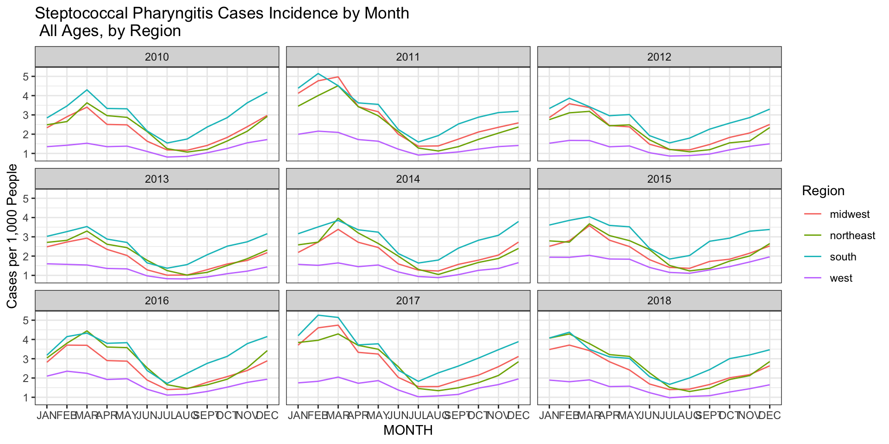
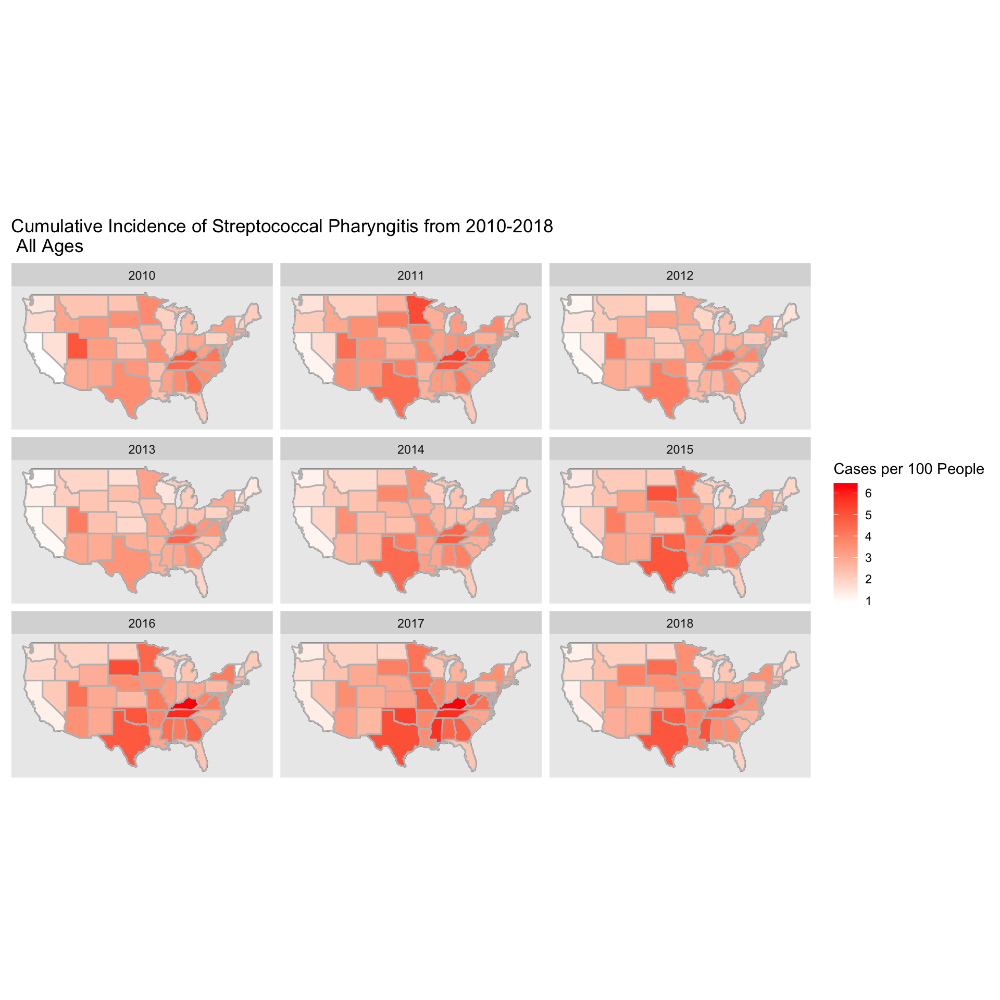
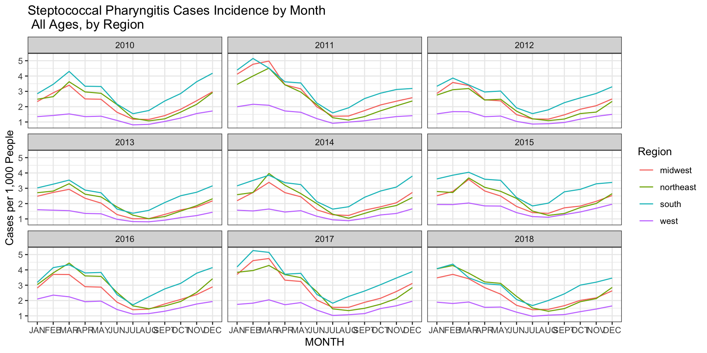
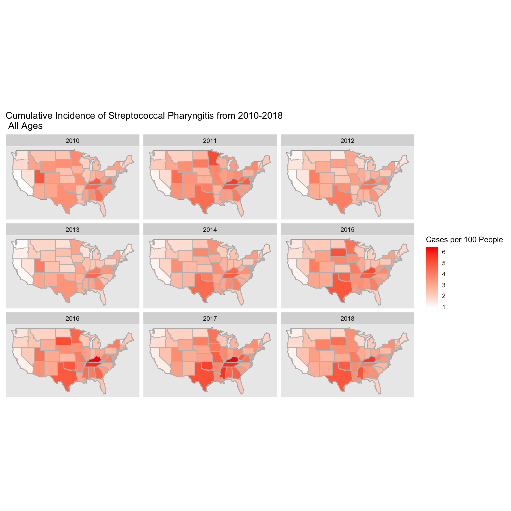
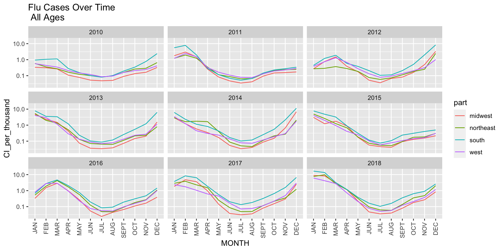
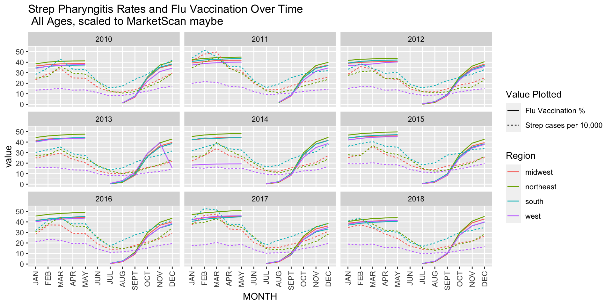
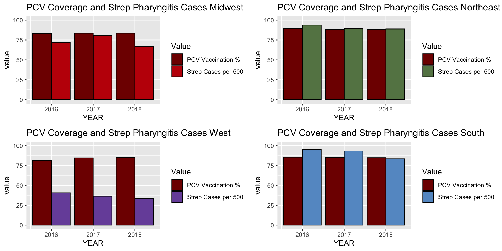
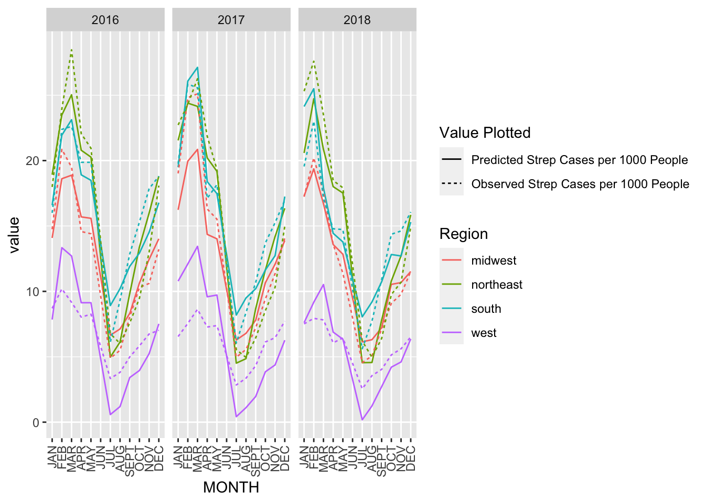
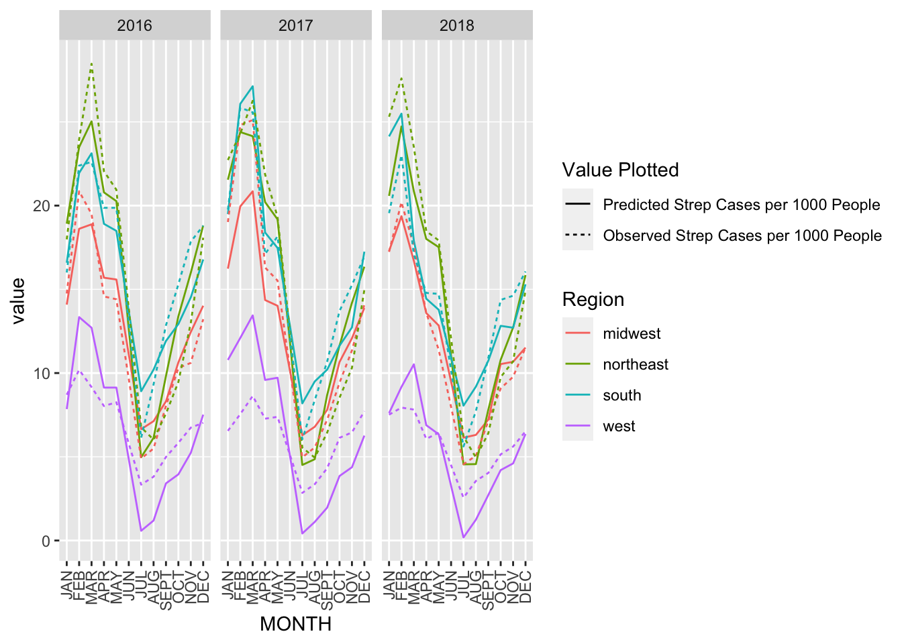

Welcome to my website!
Maddy Kline
##Introduction
text
##Results
 






 

##Conclusions
##Appendix
knitr::opts_chunk$set(echo = TRUE)
library(tidyverse)
library(ggplot2)
library(usmap)
library(gridExtra)
library(maps)
library(mapdata)
library(ggmap)
#Read in data on cases
dat <- read_csv("/Users/madeleinekline/Dropbox (Harvard University)/G1/GradLab/StrepPharyngitis/output/GeoVisits.csv")
#Read in data on membership
coh <- read_csv("/Users/madeleinekline/Dropbox (Harvard University)/G1/GradLab/StrepPharyngitis/output/GeoCohort.csv")
#this dataframe has population by sex, age group, and state but not by month. So need to add it to the other dataframe once already collapsed by year.
#get data by year, rather than by month:
by_year <- aggregate(NVISITS ~ YEAR + STATE + SEX + AGEGRP + PRIMARYCOND, dat, sum)
#we can then join this with the population data from cohort
by_year <- left_join(by_year, coh)
by_year |> group_by(YEAR) |> summarize(total_vis = sum(NVISITS), total_memb = sum(NMEMB), CI = total_vis/total_memb) |> ggplot(aes(x=YEAR, y = total_vis)) + geom_bar(stat = "identity", fill = "steelblue") + theme_bw() + geom_text(aes(label=total_vis), vjust=1.6, color="white", size=3.5) + ggtitle("Total Strep Pharyngitis Visits by Year US")
by_year |> group_by(YEAR) |> summarize(total_vis = sum(NVISITS), total_memb = sum(NMEMB), CI = round(total_vis/total_memb,4)) |> ggplot(aes(x=YEAR, y = CI)) + geom_bar(stat = "identity", fill = "steelblue") + theme_bw() + geom_text(aes(label=CI), vjust=1.6, color="white", size=2.0) + ggtitle("Total Strep Pharyngitis Visits per Member by Year US")
summar <- by_year |> group_by(YEAR) |> summarize(total_vis = sum(NVISITS), total_memb = sum(NMEMB), CI = total_vis/total_memb)
sum(summar$total_vis) #total of 6,949,847 visits in those 9 years
sum(summar$total_memb) #total of 240,231,310 members; but not unique individuals
#we now load in US mapping data from the maps package
us_df <- map_data("state")
#this creates a base US map to build upon
us_base <- ggplot(data = us_df, mapping = aes(x = long, y = lat, group =group))+
coord_fixed(1.3) + geom_polygon(color="black", fill = "gray")
#let's summarize cumulative incidence by state across years to start
by_state <- by_year |>
group_by(YEAR, STATE) |>
summarize(visits = sum(NVISITS), members = sum(NMEMB), CI = visits/members)
#we now manipulate the data slightly to show CI per hundred, and make the state names match the mapping dataframe
strep_all <- by_state |> mutate(region = tolower(STATE), CI_per_hundred = CI*100) |>
select(region, CI_per_hundred)
#we join our dataframe with strep info with our mapping dataframe
us_strep_all <- inner_join(us_df, strep_all, by = "region")
us_strep_rates_over_time <- us_base + geom_polygon(data = us_strep_all, aes(fill = CI_per_hundred))+
geom_polygon(color = "gray", fill = NA) + theme(
axis.text = element_blank(),
axis.line = element_blank(),
axis.ticks = element_blank(),
panel.border = element_blank(),
panel.grid = element_blank(),
axis.title = element_blank()
) + facet_wrap(~YEAR) + scale_fill_gradient(trans = "log10") + ggtitle("Cumulative Incidence of Streptococcal Pharyngitis from 2010-2018 \n All Ages")
us_strep_rates_over_time
#now we add region designations for "northeast", "south", "midwest", and "west"
#add regions to this dataframe
#make a function that converts lists of state abbreviations to lists of state names
to_statename <- function(list){
new_list <- c()
for(i in 1:length(list)){
name <- state.name[grep(list[i], state.abb)]
new_list <- append(new_list, name)
}
new_list
}
northeast_states <- tolower(to_statename(.northeast_region))
midwest_states <- tolower(to_statename(.midwest_region))
south_states <- tolower(to_statename(.south_region))
west_states <- tolower(to_statename(.west_region))
northeast_df <- data.frame(region = northeast_states, part = "northeast")
midwest_df <- data.frame(region = midwest_states, part = "midwest")
south_df <- data.frame(region = south_states, part = "south")
west_df <- data.frame(region = west_states, part = "west")
#will put dc in the south because maryland and viriginia are
dc_df <- data.frame(region = "washington dc", part = "south")
state_parts <- rbind(northeast_df, midwest_df, south_df, west_df, dc_df)
strep_all_region <- left_join(strep_all, state_parts, by = "region")
states_indiv_region <- strep_all_region |> group_by(YEAR, region) |> ggplot(aes(YEAR, CI_per_hundred, group=region)) + geom_line(aes(col = part)) + ggtitle("Streptococcal Pharyngitis In All States by Region") + theme_bw()
#now group them by region and just report 1 value per region
state_parts_2 <- state_parts
names(state_parts_2)[1] <- "state"
by_state_2 <- by_state |> mutate(state = tolower(STATE))
strep_region_visits <- left_join(by_state_2, state_parts_2, by = "state")
strep_region_visits_agg <- aggregate(visits~ part + YEAR, dat = strep_region_visits, sum)
strep_region_members_agg <- aggregate(members~ part + YEAR, dat = strep_region_visits, sum)
strep_region_joined <- left_join(strep_region_visits_agg, strep_region_members_agg)
strep_region_joined <- strep_region_joined |> mutate(CI_per_hundred = visits/members * 100)
per_region<- strep_region_joined |> group_by(YEAR, part) |> ggplot(aes(YEAR, CI_per_hundred, group=part)) + geom_line(aes(col = part)) + ggtitle("Streptococcal Pharyngitis By Region") + theme_bw()
grid.arrange(states_indiv_region, per_region, ncol=2)
#now we look at the data by age group across all regions
by_year <- by_year |> mutate("state" = STATE)
by_year_age_visits <- aggregate(NVISITS ~ YEAR + state + AGEGRP + PRIMARYCOND, dat = by_year, sum)
by_year_age_membs <- aggregate(NMEMB ~ YEAR + state + AGEGRP + PRIMARYCOND, dat = by_year, sum)
by_year_age <- left_join(by_year_age_visits, by_year_age_membs)
by_year_age <- by_year_age |> mutate(CI_per_hundred = NVISITS/NMEMB *100, state = tolower(state))
#add in region just in case?
by_year_age <- left_join(by_year_age, state_parts_2)
#make a plot of trends over time by state
country_by_age <- left_join(aggregate(NVISITS ~ AGEGRP + YEAR, dat = by_year_age, sum), aggregate(NMEMB ~ AGEGRP + YEAR, dat = by_year_age, sum))
country_by_age <- country_by_age |> mutate(CI_per_hundred = NVISITS/NMEMB * 100)
country_by_age |> ggplot(aes(YEAR, CI_per_hundred, group = AGEGRP)) + geom_line(aes(color = AGEGRP)) + ggtitle("Streptococcal Pharyngitis in the US from 2010-2018 \n By Age Group") + theme_bw()
by_year_age |> ggplot(aes(YEAR, CI_per_hundred, group = AGEGRP)) + geom_line(aes(color=AGEGRP)) + facet_wrap(~state) + theme(axis.text.x = element_text(angle=90, hjust=1)) + ggtitle("Streptococcal Pharyngitis in the US from 2010-2018 \n By State and Age Group") + theme_bw()
#just look at 0-4, 5-9, 10-10 age groups
by_year_age |>
filter(AGEGRP %in% c("00_04", "05_09", "10_19")) |>
ggplot(aes(YEAR, CI_per_hundred, group = AGEGRP)) + geom_line(aes(color=AGEGRP)) + facet_wrap(~state) + theme(axis.text.x = element_text(angle=90, hjust=1)) + ggtitle("Streptococcal Pharyngitis in the US from 2010-2018 \n By State and Younger Age Groups") + theme_bw()
#making maps for age group trends over time
by_year_age_formap <- by_year_age
names(by_year_age_formap)[2] = "region"
us_strep_byage_map <- inner_join(us_df, by_year_age_formap, by = "region")
#attempt facet_grid with year as the column and age group as the row
us_strep_byage_map_gg <- us_base +
geom_polygon(data = us_strep_byage_map, aes(fill = CI_per_hundred)) +
geom_polygon(color = "gray", fill = NA) +
theme(
axis.text = element_blank(),
axis.line = element_blank(),
axis.ticks = element_blank(),
panel.border = element_blank(),
panel.grid = element_blank(),
axis.title = element_blank()
) + scale_fill_gradient(trans = "log10") + ggtitle("Cumulative Incidence of Streptococcal Pharyngitis from 2010-2018 \n By Age Group")
us_strep_byage_map_gg + facet_grid(rows = vars(AGEGRP), cols = vars(YEAR) )
#just youngest age group first
us_strep_byage_map_04 <- us_strep_byage_map |>
filter(AGEGRP == "00_04")
us_strep_byage_map_gg04 <- us_base + geom_polygon(data = us_strep_byage_map_04, aes(fill = CI_per_hundred))+
geom_polygon(color = "gray", fill = NA) + theme(
axis.text = element_blank(),
axis.line = element_blank(),
axis.ticks = element_blank(),
panel.border = element_blank(),
panel.grid = element_blank(),
axis.title = element_blank()
) + facet_wrap(~YEAR) + scale_fill_gradient(trans = "log10") + ggtitle("Cumulative Incidence of Streptococcal Pharyngitis from 2010-2018 \n 0-4 Age Group")
us_strep_byage_map_gg04
us_strep_byage_map_09 <- us_strep_byage_map |>
filter(AGEGRP == "05_09")
us_strep_byage_map_gg09 <- us_base + geom_polygon(data = us_strep_byage_map_09, aes(fill = CI_per_hundred))+
geom_polygon(color = "gray", fill = NA) + theme(
axis.text = element_blank(),
axis.line = element_blank(),
axis.ticks = element_blank(),
panel.border = element_blank(),
panel.grid = element_blank(),
axis.title = element_blank()
) + facet_wrap(~YEAR) + scale_fill_gradient(trans = "log10") + ggtitle("Cumulative Incidence of Streptococcal Pharyngitis from 2010-2018 \n 5-9 Age Group")
us_strep_byage_map_gg09
#look by region over time by age group
by_year_age_region_visits <- aggregate(NVISITS ~ part + AGEGRP + PRIMARYCOND + YEAR, dat = by_year_age, sum)
by_year_age_region_members <- aggregate(NMEMB ~ part + AGEGRP + PRIMARYCOND + YEAR, dat = by_year_age, sum)
by_year_age_region <- left_join(by_year_age_region_visits,by_year_age_region_members)
by_year_age_region <- by_year_age_region |> mutate(CI_per_hundred = NVISITS/NMEMB*100)
by_year_age_region |> ggplot(aes(YEAR, CI_per_hundred, group = part)) + geom_line(aes(color = part)) + facet_wrap(~AGEGRP)
#showing by region instead
by_year_age_region_tojoin <- by_year_age_region |> select(part, AGEGRP, YEAR, CI_per_hundred)
us_strep_byage_map_tojoin <- us_strep_byage_map |> select(-CI_per_hundred)
tmp <- left_join(us_strep_byage_map_tojoin, by_year_age_region_tojoin)
#now plotting youngest age group over time by region
CIs_by_region <- tmp
CIs_by_region_04 <- CIs_by_region |>
filter(AGEGRP == "00_04")
us_strep_byage_byregion_map_gg04 <- us_base + geom_polygon(data = CIs_by_region_04, aes(fill = CI_per_hundred))+
geom_polygon(color = "gray", fill = NA) + theme(
axis.text = element_blank(),
axis.line = element_blank(),
axis.ticks = element_blank(),
panel.border = element_blank(),
panel.grid = element_blank(),
axis.title = element_blank()
) + facet_wrap(~YEAR) + scale_fill_gradient(trans = "log10") + ggtitle("Cumulative Incidence of Streptococcal Pharyngitis from 2010-2018 \n 0-4 Age Group by Region")
us_strep_byage_byregion_map_gg04
#do same thing for 5-9 age group
CIs_by_region_09 <- CIs_by_region |>
filter(AGEGRP == "05_09")
us_strep_byage_byregion_map_gg09 <- us_base + geom_polygon(data = CIs_by_region_09, aes(fill = CI_per_hundred))+
geom_polygon(color = "gray", fill = NA) + theme(
axis.text = element_blank(),
axis.line = element_blank(),
axis.ticks = element_blank(),
panel.border = element_blank(),
panel.grid = element_blank(),
axis.title = element_blank()
) + facet_wrap(~YEAR) + scale_fill_gradient(trans = "log10") + ggtitle("Cumulative Incidence of Streptococcal Pharyngitis from 2010-2018 \n 5-9 Age Group by Region")
us_strep_byage_byregion_map_gg09
#try by gender
#can make plot for 1 age group that also has sex and use sex as second factor for grid
by_year_sex_04 <- by_year_age |> filter(AGEGRP == "00_04") #this doesnt have sex
by_year_2 <- by_year |> mutate(state = tolower(state))
by_year_region <- left_join(by_year_2, state_parts_2)#this has sex, age group, region
by_year_region
by_year_region_sex_04 <- by_year_region |>
filter(AGEGRP == "00_04") |>
mutate("CI_per_hundred" = NVISITS/NMEMB*100) |>
mutate("region" = state) |>
mutate("SEX" = as.factor(SEX))
by_year_region_sex_04_formap <- inner_join(by_year_region_sex_04, us_df, by = "region")
us_base + geom_polygon(data = by_year_region_sex_04_formap, aes(fill = CI_per_hundred))+
geom_polygon(color = "gray", fill = NA) + theme(
axis.text = element_blank(),
axis.line = element_blank(),
axis.ticks = element_blank(),
panel.border = element_blank(),
panel.grid = element_blank(),
axis.title = element_blank()
) + facet_grid(vars(SEX), vars(YEAR)) + scale_fill_gradient(trans = "log10") + ggtitle("Cumulative Incidence of Streptococcal Pharyngitis from 2010-2018 \n 0-4 Age Group by Sex")
by_year_region_sex_09 <- by_year_region |>
filter(AGEGRP == "05_09") |>
mutate("CI_per_hundred" = NVISITS/NMEMB*100) |>
mutate("region" = state) |>
mutate("SEX" = as.factor(SEX))
by_year_region_sex_09_formap <- inner_join(by_year_region_sex_09, us_df, by = "region")
us_base + geom_polygon(data = by_year_region_sex_09_formap, aes(fill = CI_per_hundred))+
geom_polygon(color = "gray", fill = NA) + theme(
axis.text = element_blank(),
axis.line = element_blank(),
axis.ticks = element_blank(),
panel.border = element_blank(),
panel.grid = element_blank(),
axis.title = element_blank()
) + facet_grid(vars(SEX), vars(YEAR)) + scale_fill_gradient(trans = "log10") + ggtitle("Cumulative Incidence of Streptococcal Pharyngitis from 2010-2018 \n 5-9 Age Group by Sex")